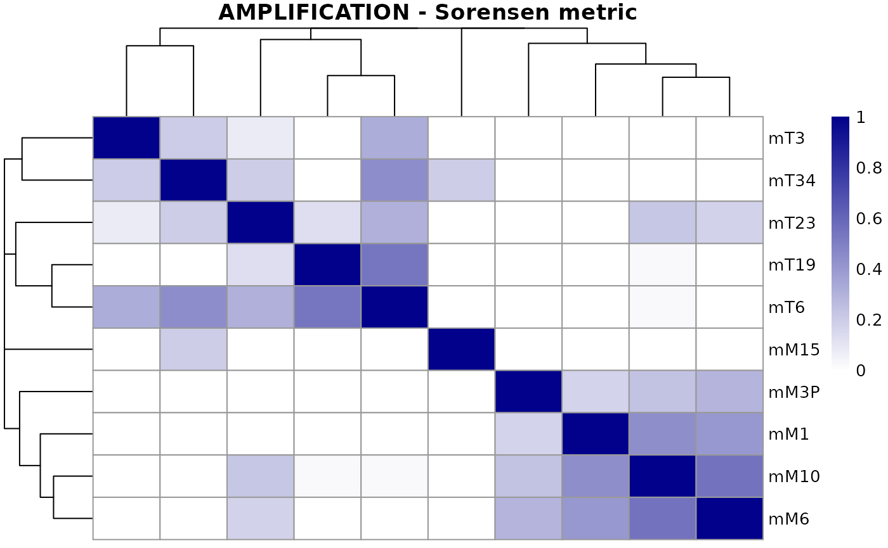
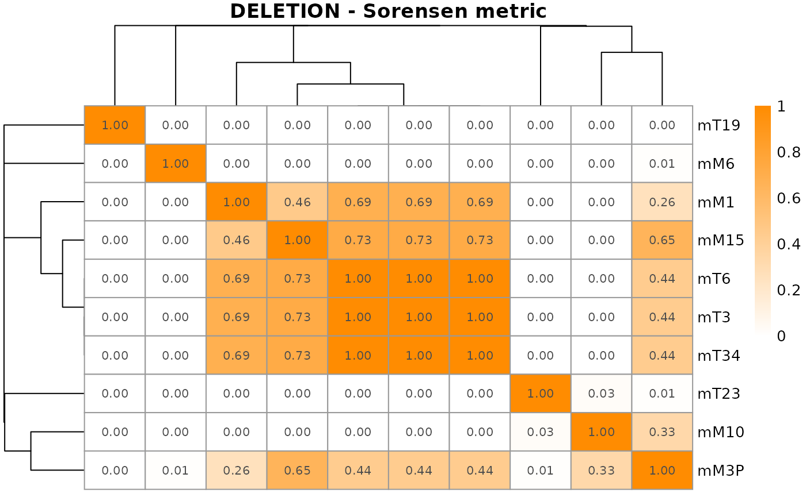
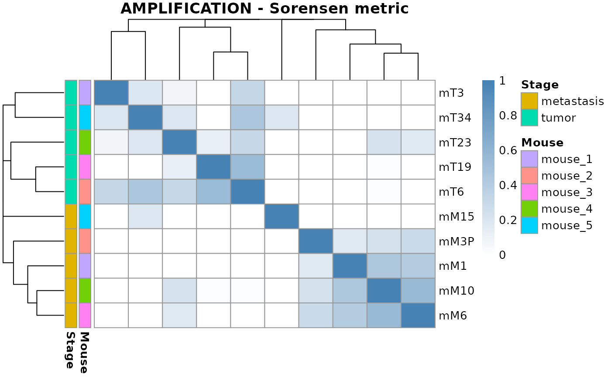

vignettes/CNVMetrics.Rmd
CNVMetrics.Rmd
Package: CNVMetrics
Authors: Astrid Deschênes [aut, cre] (https://orcid.org/0000-0001-7846-6749), Pascal Belleau [aut] (https://orcid.org/0000-0002-0802-1071), Alexander Krasnitz [aut]
Version: 0.1.4
Compiled date: 2021-07-01
License: Artistic-2.0
The CNVMetrics package and the underlying CNVMetrics code are distributed under the Artistic license 2.0. You are free to use and redistribute this software.
Copy number variation (CNV) includes multiplication and deletion of DNA segment. Copy number variations have been shown to be associated with a wide spectrum of pathological conditions and complex traits, such as developmental neuropsychiatric disorders (Hiroi et al. 2013) and especially cancer (Stratton, Campbell, and Futreal 2009).
CNVs are usually reported, for each sample, as genomic regions that are duplicated or deleted with respect to a reference. Those regions are denoted as CNV status calls. The level of amplification or deletion can also be reported, usually in log2 ratio values or normalized read depth (Zhao et al. 2013). As an example, the Figure 1 shows the copy number profiles from sequencing data of two mouse pancreatic organoids (Oni et al. 2020), calculated with CNprep (Belleau et al. 2020) and plot with gtrellis (Gu, Eils, and Schlesner 2016).
Copy number profiles of two mouse metastatic pancreatic organoids (M10 and M30).
While visual representation is a practical way to qualitatively compare copy number profiles, metrics are useful statistical tools for quantitatively measuring similarity and dissimilarity between profiles. Similarity metrics can be employed to compare CNV profiles of genetically unrelated samples. Moreover, those metrics can as well be put to use on samples with common genetic background. As an example, a comparison between primary and metastatic tumor CNV profiles may reveal genomic determinants of metastasis. Similarly, patient-derived xenograft or organoid models of cancer are expected to recapitulate CNV patterns of the tumor tissue of origin (Gendoo et al. 2019).
The CNVMetrics package calculates metrics to estimate the level of similarity between copy number profiles. Some metrics are calculated using the CNV status calls (amplification/deletion status) while others are based on the level of amplification/deletion. Finally, a visualization tool is provided to explore resulting metrics in the form of sample-to-sample heatmaps.
To install the latest version accessible on the CNVMetrics Github Website, the devtools package is required.
## Load required package
library(devtools)
## Install the latest version of CNVMetrics
devtools::install_github('KrasnitzLab/CNVMetrics')It is also possible to install an official release. The list of available releases is posted on the CNVMetrics Release Website.
## Load required package
library(devtools)
## Install the version v0.1.4 of CNVMetrics
## using 'ref' parameter
devtools::install_github('KrasnitzLab/CNVMetrics', ref = "v0.1.4")The following figure gives an overview of the capabilities of CNVMetrics to calculate metrics using the CNV status calls (amplification/deletion status):
The key functions for each step are:
| Step | Function |
|---|---|
| Data Importation | GenomicRanges::makeGRangesListFromDataFrame() |
| Metric Calculation | calculateOverlapMetric() |
| Metric Visualization | plotOverlapMetric() |
The package::function() notation is used for functions from other packages.
CNV status calls are represented as segments with a copy number state. The state be general, such as “amplification,” “deletion” or “neutral,” or more specific such as TODO.
A basic five-column input file containing genomic position (chromosome, start, end), sample identification and CNV status calls is required. All samples that need to be analyzed together have to be combined into one file.
A column named state is required. In this column, the amplified and deleted segments must be assigned those values:
Segments with other state values can be present in the file. However, those segments won’t be retain for the calculation of the metrics.
Example of a copy number file containing CNV calls.
The input format for the copy number information, as needed by the calculateOverlapMetric() function, is a GRangesList object.
The easiest way to generate a GRangesList object is to first load the copy number information into an R data.frame and then, use the GenomicRanges::makeGRangesListFromDataFrame() function to convert them to a GRangesList.
For this demonstration, we consider CNV status calls as obtained with CNprep (Belleau et al. 2020), from ten mouse pancreatic organoids (Oni et al. 2020).
## Load required libraries
library(GenomicRanges)
library(CNVMetrics)
## Load file containing CNV calls for 10 mouse organoids
data.dir <- system.file("extdata", package="CNVMetrics")
cnv.file <- file.path(data.dir, "mousePairedOrganoids.txt")
calls <- read.table(cnv.file, header=TRUE, sep="\t")
## The CNV status calls for all samples are present in one file
## The 'state' column is required
## The chromosome Y has been removed
head(calls)## ID chr start end log2value state
## 1 mT3 chr1 3527630 195471971 0.143253158 NEUTRAL
## 2 mT3 chr2 3549740 182113224 0.008638116 NEUTRAL
## 3 mT3 chr3 3536051 160039680 0.032630258 NEUTRAL
## 4 mT3 chr4 3734693 156508116 -0.026741963 NEUTRAL
## 5 mT3 chr5 3575586 111373751 -0.018519856 NEUTRAL
## 6 mT3 chr5 111373751 114262563 0.226961493 AMPLIFICATION
## The ID column identifies the 10 samples
unique(calls[,"ID"])## [1] "mT3" "mM6" "mM10" "mM15" "mT6" "mT19" "mT23" "mT34" "mM1" "mM3P"
## The ID column is used to split the samples into different GRanges
## inside a GRangesList
## The 'keep.extra.column=TRUE' parameter is needed to retained the extra
## column 'state' that is needed for the calculation of the metrics
grl <- GenomicRanges::makeGRangesListFromDataFrame(calls,
split.field="ID", keep.extra.columns=TRUE)
grl## GRangesList object of length 10:
## $mM1
## GRanges object with 33 ranges and 2 metadata columns:
## seqnames ranges strand | log2value state
## <Rle> <IRanges> <Rle> | <numeric> <character>
## [1] chr1 3527630-62533399 * | 0.0351701 NEUTRAL
## [2] chr1 62533399-82082589 * | -0.1066207 NEUTRAL
## [3] chr1 82082589-195471971 * | 0.0807449 NEUTRAL
## [4] chr2 3549740-182113224 * | 0.0527007 NEUTRAL
## [5] chr3 3536051-136509203 * | 0.3431661 AMPLIFICATION
## ... ... ... ... . ... ...
## [29] chr18 3558909-90702639 * | 0.0736673 NEUTRAL
## [30] chr19 3614043-61431566 * | 0.0902238 NEUTRAL
## [31] chrX 5577384-62973719 * | -0.2259987 NEUTRAL
## [32] chrX 62973719-84082850 * | -0.0641819 NEUTRAL
## [33] chrX 84082850-169538352 * | -0.3902963 DELETION
## -------
## seqinfo: 20 sequences from an unspecified genome; no seqlengths
##
## ...
## <9 more elements>The calculation of the similarity metrics is done with the calculateOverlapMetric() function.
metric <- calculateOverlapMetric(grl, method = "sorensen")
metric## CNV Metric done on overlapping regions
## Metric:
## sorensen
##
## AMPLIFICATION:
## mM1 mM10 mM15 mM3P mM6
## mM1 NA NA NA NA NA
## mM10 0.4437132 NA NA NA NA
## mM15 0.0000000 0.0000000 NA NA NA
## mM3P 0.1713638 0.2380730 0 NA NA
## mM6 0.4048136 0.5545147 0 0.2952499 NA
## [ -- omitted 5 rows/columns ]
##
## DELETION:
## mM1 mM10 mM15 mM3P mM6
## mM1 NA NA NA NA NA
## mM10 0.0000000 NA NA NA NA
## mM15 0.4595765 0.0000000 NA NA NA
## mM3P 0.2568018 0.3336979 0.6481145 NA NA
## mM6 0.0000000 0.0000000 0.0000000 0.00918594 NA
## [ -- omitted 5 rows/columns ]A heatmap of this similarity metrics can be a useful tool to get an overview over similarities and dissimilarities between samples.
The plotOverlapMetric() function generates a graphical representation of the similarity metrics in the form of a sample-to-sample heatmap. By default, an hierarchical clustering based on based on the sample distances (1-metrics) is used.
## Create graph for the metrics related to amplified regions
plotOverlapMetric(metric, type = "AMPLIFICATION")
The plotOverlapMetric() function uses the pheatmap package to generate the graph. All arguments accepted by pheatmap::pheatmap function are valid arguments.
## Create graph for the metrics related to deleted regions
## Metric value is printed as 'display_numbers' and 'number_format' are
## arguments recognized by pheatmap() function
plotOverlapMetric(metric, type = "DELETION",
colorRange=c("white", "darkorange"),
show_colnames=TRUE,
display_numbers=TRUE,
number_format="%.2f")
Row and/or column annotation is often useful and can easy by included with the annotation_row or annotation_col arguments, as described in the pheatmap::pheatmap method.
## Load file containing annotations for the mouse organoids
## The mouse ID identifying the source of the sample
## The stage identifying the state (tumor vs metastasis) of the sample
data.dir <- system.file("extdata", package="CNVMetrics")
annotation.file <- file.path(data.dir, "mousePairedOrganoidsInfo.txt")
annotOrg <- read.table(annotation.file, header=TRUE, sep="\t")
## The row names must correspond to the names assigned to the rows/columns
## in the CNVMetric object
rownames(annotOrg) <- annotOrg$ID
annotOrg$ID <- NULL
all(rownames(annotOrg) == rownames(metric$AMPLIFICATION))## [1] TRUE
## Create graph for the metrics related to amplified regions
## Rows are annotated with the stage and mouse information
plotOverlapMetric(metric, type = "AMPLIFICATION",
colorRange=c("white", "steelblue"),
annotation_row=annotOrg)
This survey represents the overlap metrics that are implemented in CNVMetrics package. Those metrics are calculated using the CNV status calls. The size of the amplified/deleted regions as well as the size of the overlapping of regions are always in base paired.
The Sørensen coefficient (Sørensen 1948) is calculated by dividing twice the size of the intersection by the sum of the size of the two sets:
\[\begin{equation} \frac{2\times \left| X \cap Y \right| }{\left| X \right| + \left| Y \right|} (\#eq:sorensen) \end{equation}\]
where \(X\) and \(Y\) represent the regions of each sample in base paired.
The Szymkiewicz–Simpson coefficient (Vijaymeena and K. 2016), also known as the overlap coefficient, is calculated by dividing the size of the intersection by the smaller of the size of the two sets:
\[\begin{equation} \frac{\left| X \cap Y \right|}{min \left(\left| X \right|,\left| Y \right|\right)} (\#eq:szymkiewicz) \end{equation}\]
where \(X\) and \(Y\) represent the regions of each sample in base paired. If set \(X\) is a subset of \(Y\) or vice versa, the overlap coefficient value is 1.
The Jaccard coefficient (Jaccard 1912), also known as coefficient of community, is calculated by dividing the size of the intersection by the smaller of the size of the two sets:
\[\begin{equation} \frac{\left| X \cap Y \right| }{ \left| X \cup Y \right|} (\#eq:jaccard) \end{equation}\]
where \(X\) and \(Y\) represent the regions of each sample in base paired.
This survey represents the similarity measures that are implemented in CNVMetrics package. Those metrics are calculated using the level of amplification/deletion. The level of amplification/deletion is in log2 ratio while the size of the regions is in base paired.
The Weighted Euclidean Distance corresponds to the euclidean distance between the log2 values of the two samples multiplied by the natural logarithm of the number of bases of the analyzed segments. The final metric is the squared sum of the values obtained for all segments included in the calculation.
\[\begin{equation} \sqrt{\sum_{i=1} log_{2}(w_{i}) (A_{i} - B_{i})^{2}} (\#eq:euclidean) \end{equation}\]
where \(A_{i}\) and \(B_{i}\) represent the log2 ratio values of samples \(A\) and \(B\) for the region \(i\) while \(w_{i}\) is the length of region \(i\) in base paired.
The GenomicRanges::makeGRangesListFromDataFrame() function enables the creation of a list of GRangesList objects from a data.frame. However, GRangesList can also be generated and filled manually.
## Construction a GRangesList()
gr1 <- GRanges(seqnames="chr2", ranges=IRanges(3, 6000),
strand="+", state="AMPLIFICATION",
log2ratio=0.45)
gr2 <- GRanges(seqnames=c("chr1", "chr2"),
ranges=IRanges(c(7,5555), width=c(1200, 40)),
strand=c("+", "-"), state=c("NEUTRAL", "AMPLIFICATION"),
log2ratio=c(0.034, 0.5))
gr3 <- GRanges(seqnames=c("chr1", "chr2"),
ranges=IRanges(c(1, 5577), c(3, 5666)),
strand=c("-", "-"), state=c("NEUTRAL", "AMPLIFICATION"),
log2ratio=c(0.04, 0.31))
grl <- GRangesList("sample01"=gr1, "sample02"=gr2, "sample03"=gr3)Here is the output of sessionInfo() on the system on which this document was compiled:
## R version 4.0.3 (2020-10-10)
## Platform: x86_64-pc-linux-gnu (64-bit)
## Running under: Ubuntu 20.04 LTS
##
## Matrix products: default
## BLAS/LAPACK: /usr/lib/x86_64-linux-gnu/openblas-pthread/libopenblasp-r0.3.8.so
##
## locale:
## [1] LC_CTYPE=en_US.UTF-8 LC_NUMERIC=C
## [3] LC_TIME=en_US.UTF-8 LC_COLLATE=en_US.UTF-8
## [5] LC_MONETARY=en_US.UTF-8 LC_MESSAGES=C
## [7] LC_PAPER=en_US.UTF-8 LC_NAME=C
## [9] LC_ADDRESS=C LC_TELEPHONE=C
## [11] LC_MEASUREMENT=en_US.UTF-8 LC_IDENTIFICATION=C
##
## attached base packages:
## [1] stats4 parallel stats graphics grDevices utils datasets
## [8] methods base
##
## other attached packages:
## [1] CNVMetrics_0.1.4 GenomicRanges_1.42.0 GenomeInfoDb_1.26.7
## [4] IRanges_2.24.1 S4Vectors_0.28.1 BiocGenerics_0.36.1
## [7] knitr_1.31 BiocStyle_2.18.1
##
## loaded via a namespace (and not attached):
## [1] SummarizedExperiment_1.20.0 xfun_0.21
## [3] lattice_0.20-41 colorspace_2.0-0
## [5] htmltools_0.5.1.1 rtracklayer_1.50.0
## [7] yaml_2.2.1 XML_3.99-0.5
## [9] rlang_0.4.10 pkgdown_1.6.1
## [11] BiocParallel_1.24.1 RColorBrewer_1.1-2
## [13] matrixStats_0.58.0 GenomeInfoDbData_1.2.4
## [15] lifecycle_1.0.0 stringr_1.4.0
## [17] zlibbioc_1.36.0 MatrixGenerics_1.2.1
## [19] Biostrings_2.58.0 munsell_0.5.0
## [21] gtable_0.3.0 ragg_1.1.0
## [23] memoise_2.0.0 evaluate_0.14
## [25] Biobase_2.50.0 fastmap_1.1.0
## [27] highr_0.8 scales_1.1.1
## [29] BiocManager_1.30.10 DelayedArray_0.16.3
## [31] cachem_1.0.4 desc_1.2.0
## [33] XVector_0.30.0 farver_2.0.3
## [35] systemfonts_1.0.1 fs_1.5.0
## [37] Rsamtools_2.6.0 textshaping_0.3.0
## [39] gridExtra_2.3 digest_0.6.27
## [41] stringi_1.5.3 bookdown_0.21
## [43] grid_4.0.3 rprojroot_2.0.2
## [45] tools_4.0.3 bitops_1.0-6
## [47] magrittr_2.0.1 RCurl_1.98-1.2
## [49] crayon_1.4.1 Matrix_1.3-2
## [51] pheatmap_1.0.12 assertthat_0.2.1
## [53] rmarkdown_2.6 R6_2.5.0
## [55] GenomicAlignments_1.26.0 compiler_4.0.3